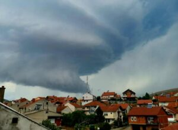
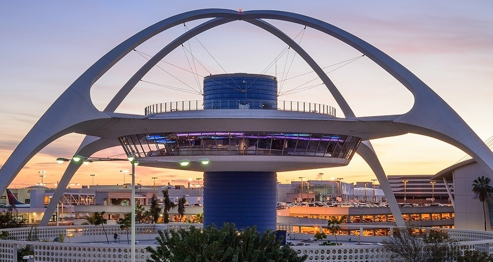
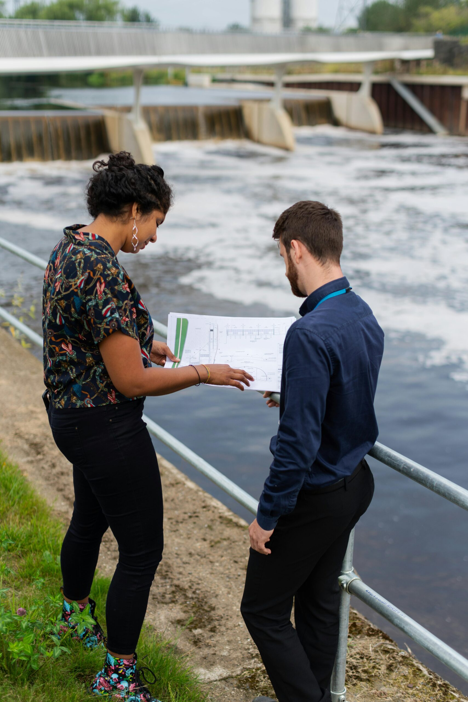
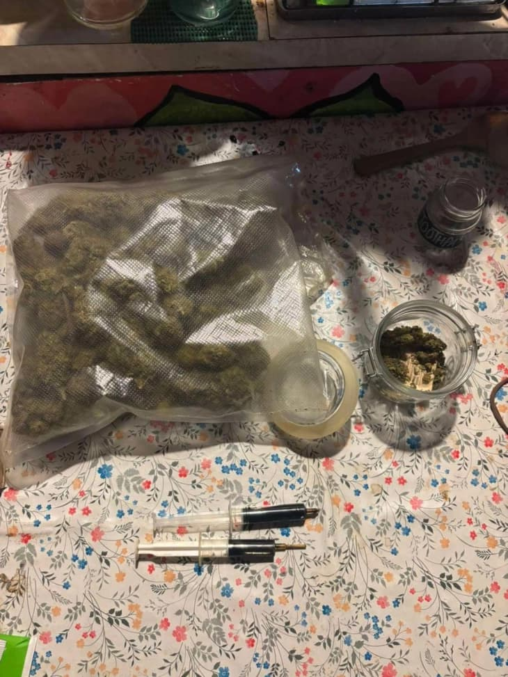
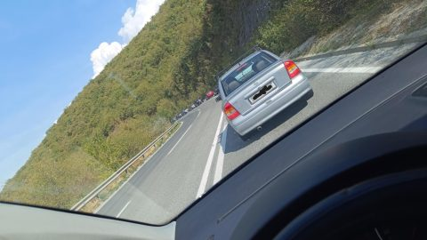

Најнови Вести

Обвинителите Хајрулахи и Цветановски жестоко ја отфрлаат одговорноста
Основното јавно обвинителство (ОЈО) Штип, по целосно спроведена истражна постапка и обезбедени докази, поднесе обвинение против суспендираниот шеф...

ВМРО-ДПМНЕ ќе нема свој кандидат за Кочани, ќе го поддржи независниот Влатко Грозданов
ВМРО ДПМНЕ ги објави преостанатите имиња на кандидатите за градоначалници, во Кочани ќе го поддржат натпартискиот кандидат д р. Влатко Грозданов, ...
Митева: Обезбедени се 2,5 милиони денари за интервентна заштита на „Македониумот“
Обезбеден е проект за интервентна заштита на споменикот Македониум во вредност од 2,5 милиони денари што ќе биде реализиран до крајот на годинава,...

Случајот „Онкологија“ продолжува против поранешниот директор Васев и двајца онколози
Во Основниот кривичен суд Скопје, денеска, со сведоци на Основното јавно обвинителство продолжи судењето против поранешниот директор на Клиниката ...

Народна банка: Поевтинуваат секојдневните плаќања за граѓаните и за компаниите
Активностите на Народната банка за намалување на надоместоците на банките за електронските плаќања заради нивна поголема достапност и користење ве...
Македонија
Обвинителите Хајрулахи и Цветановски жестоко ја отфрлаат одговорноста
Основното јавно обвинителство (ОЈО) Штип, по целосно спроведена истражна постапка и обезбедени докази, поднесе обвинение против суспендираниот шеф...
ВМРО-ДПМНЕ ќе нема свој кандидат за Кочани, ќе го поддржи независниот Влатко Грозданов
ВМРО ДПМНЕ ги објави преостанатите имиња на кандидатите за градоначалници, во Кочани ќе го поддржат натпартискиот кандидат д р. Влатко Грозданов, ...
Митева: Обезбедени се 2,5 милиони денари за интервентна заштита на „Македониумот“
Обезбеден е проект за интервентна заштита на споменикот Македониум во вредност од 2,5 милиони денари што ќе биде реализиран до крајот на годинава,...
Случајот „Онкологија“ продолжува против поранешниот директор Васев и двајца онколози
Во Основниот кривичен суд Скопје, денеска, со сведоци на Основното јавно обвинителство продолжи судењето против поранешниот директор на Клиниката ...

Нестабилно време со повремен дожд и грмежи до крајот на неделава
Во Скопје утре ќе биде променливо облачно, попладне нестабилно со пороен дожд, грмежи и засилен ветер. Под влијание на влажна и нестабилна воздуш...
Свет
Израел изврши воздушен напад врз цели во главниот град на Јемен, има убиени и ранети
Израел изврши воздушен напад врз цели во главниот град на Јемен, има убиени и ранети :. Израелските воздухопловни авиони ги нападнаа целите на ре...
Илон Маск ја изгуби титулата најбогат човек во светот
Растот на богатството од 70 милијарди долари на техничкиот директор на Оракл ја заострува трката за најбогат човек во светот Лари Елисон наспроти ...
Руско Министерство за одбрана: Не планиравме да гаѓаме кон Полска, подготвени сме за разговор
Руско Министерство за одбрана: Не планиравме да гаѓаме кон Полска! Руското министерство за одбрана се огласи по упадите на руски дронови во полск...

Видео: Поплави на Бали, загинаа најмалку девет лица
Поплавите на индонезискиот остров Бали оваа недела убија најмалку девет лица, ги блокираа главните патишта во главниот град и го нарушија животот ...
Застрелан сојузник на Трамп
Сојузникот на Трамп, Чарли Кирк, беше застрелан на настан во Јута, вели извор запознаен со ова прашање, јавува . Сите мора да се молиме за Чарли ...
Економија
Народна банка: Поевтинуваат секојдневните плаќања за граѓаните и за компаниите
Активностите на Народната банка за намалување на надоместоците на банките за електронските плаќања заради нивна поголема достапност и користење ве...

Мицкоски: За прв пат на месечно ниво имаме базична инфлација во негатива
Мицкоски: За прв пат на месечно ниво имаме базична инфлација во негатива » :. Премиерот Мицкоски нагласи дека ако се направи длабинска анализа ќе...

Инфлацијата во август 4,4 проценти на годишно ниво, 0,2 на месечно
Трошоците на животот во август годинава, во однос на август лани, се зголемиле за 4,4 проценти, а цените на мало за 4,1 процент. Цените на мало в...

Браќата Миса ќе го обновуваат кампот Треска во Струга
Јавен обвинител од Основното јавно обвинителство Кочани го започна увидот по настанатиот пожар во фабриката „Макпрогрес Винчини“ во Виница. Увидн...

Се става ред во изградбата на нови енергетски капацитети, ќе се гради она што е приоритет за државата и граѓаните
На интернет страницата на МЕРМС се објавени сите потребни документи за доставување иницијативи за развој на енергетски проекти, со што започнува п...
Хроника
Повторно настрада пешак: Жена е тешко повредена додека автомобил влегувал во катна гаража
ОВР Прилеп било пријавено дека на ул„Сотка Ѓорѓиоски“ во Прилеп, при влез за катна гаража, патничко возило „опел“ со прилепски регистарски ознаки,...

Две лица приведени во струшко, полицијата пронашла дрога
Лицата, како што е наведено, се приведени во полициска станица и по целосно документирање на настанот, против нив ќе бидат поднесени соодветни при...

Украдени две бронзени бисти од гробиштата во Бутел
Вчера во 10:00 часот во СВР Скопје, А. Ј. Скопје пријавил дека во периодот од 07. Градските гробишта Бутел, со употреба на физичка сила и погоден...
Охриѓанец му го запалил глисерот на брат му, пожарот зафатил дел од зграда и братовиот „мерцедес“
СВР Охрид го лишиле од слобода З. С. Тој се сомничи дека околу 02:33 часот во дворно место на улицата Даме Груев во Охрид предизвикал пожар на гли...

Шест лица се повредени: Детали за несреќата во која се судрија 5 мотоцикли и 4 автомобили
Владимир Комаров“ во Скопје се случила сообраќајна несреќа помеѓу патничко возило „лада“ со скопски регистарски ознаки, управувано од Н. М. Скопје...
Спорт

Ристовски: Спортот е двигател на здраво и просперитетно општество
Вицепремиерот и министер за транспорт, Александар Николоски, во денешното обраќање на „Регионален спортски самит Скопје 2025“ најави уште поголеми...

Жезус и Тросар ќе го напуштат Арсенал
Двајца играчи на Арсенал, Бразилецот Габриел Жесус (28) и Белгиецот Леандро Тросард (30), ќе бидат на трансфер листата во зимскиот преоден рок, об...

Во Битола по пауза од 31 година попладне ќе се игра меѓународен фудбалски натпревар
Попладне во Битола, по пауза од 31 година, повторно ќе се одигра меѓународен фудбалски натпревар на кој ќе настапат младинските репрезентации на М...

Сабаленка и Анисимова во финалето на УС Опен
Првата носителка, белоруската тенисерка Арина Сабаленка ќе игра против Американката Џесика Пегула. Двата меча ќе се играат ноќта четврток кон пет...

Нов празник на џудото во Скопје
Џудо федерацијата на Македонија со гордост најавува уште еден врвен спортски настан во нејзина организација – Сениорскиот Европски куп во џудо, ко...